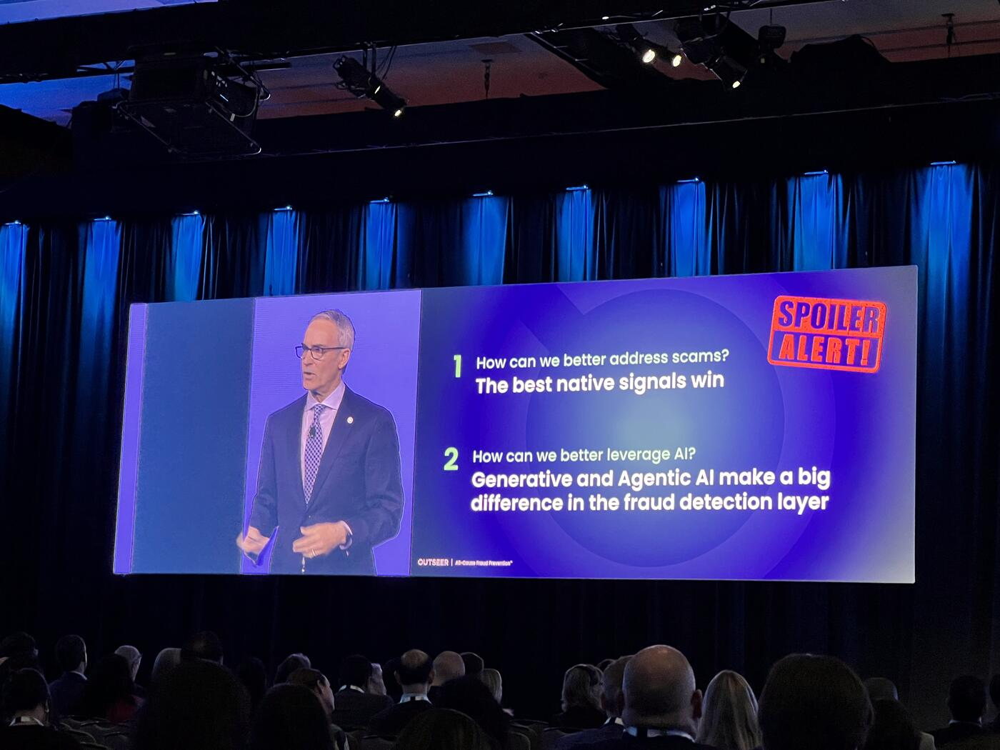
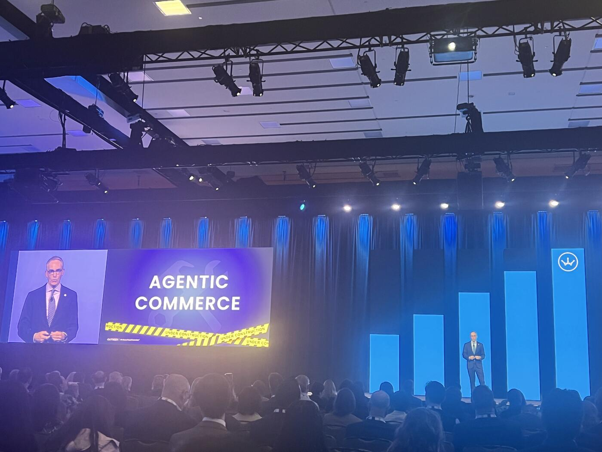
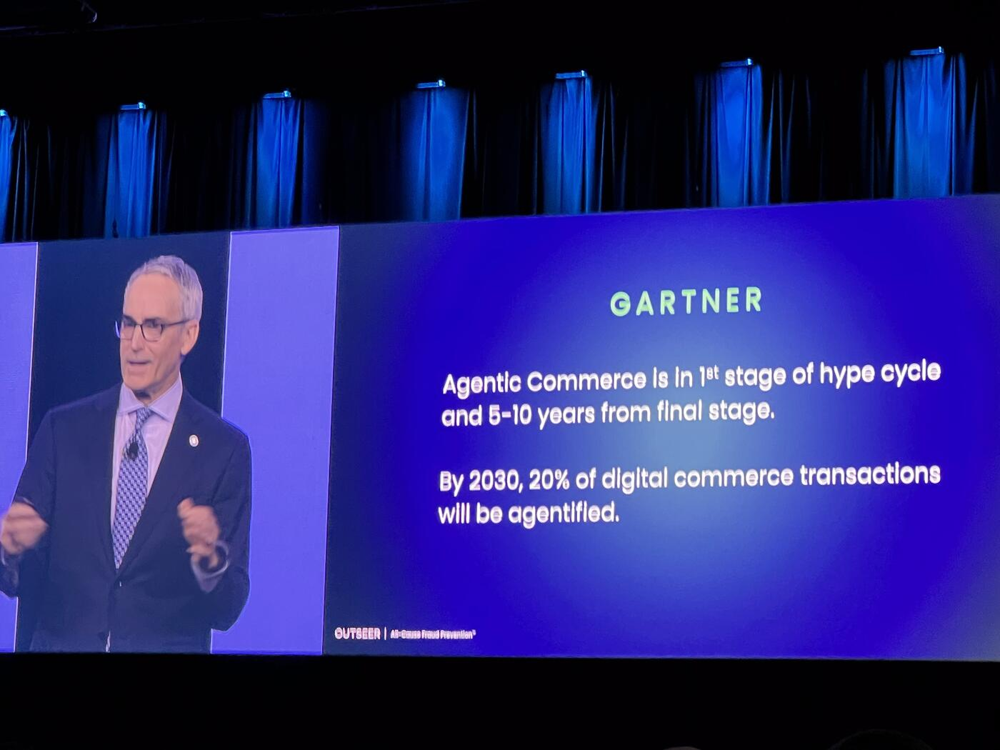

Inside the Fraud Stack: How AI Is Reshaping Detection — and Where It Still Falls Short
At a time when artificial intelligence seems to be transforming every corner of financial services simultaneously, John Filby, speaking from his vantage point in the global fraud prevention space, offered a grounded, "inside baseball" look at how AI is actually being deployed inside banks today.
"We're definitely having an everywhere all at once moment," he began, setting the tone for a session focused less on hype and more on operational reality.
Anatomy of the Modern Fraud Stack

Filby walked the audience through what he described as the modern fraud detection layer — a system that, while increasingly powered by AI, still reflects decades of architectural evolution. At its core, every transaction is surrounded by a web of data signals, pulled in through APIs and fed into a risk engine where machine learning models operate. These models, he explained, perform "millisecond anomaly detection," comparing each transaction against historical behavioral patterns to generate a risk score.
Crucially, that score does not make the final call. "That generates a risk score, not a decision," Filby emphasized. The decision itself still happens in a rules engine, where institutions apply their own thresholds and policies to determine whether to approve, block, or further authenticate a transaction. Only then, if needed, are alerts escalated to investigators through case management systems.
This layered approach, he suggested, reveals both the strength and the limitations of current fraud systems.
How We Got Here: Rules, Then Models, Then GenAI
Tracing the evolution of fraud detection, Filby noted that the industry began with static, experience-based rules. As digital commerce expanded in the 1990s, those rules quickly proved inadequate. "Rules were just way too blunt of an instrument," he said, leading to the adoption of predictive AI and machine learning models.
Yet, in a twist that still shapes systems today, those original rules were never removed. "The rules that the predictive AI was brought in to improve upon were left in place," he observed, describing how they have "a tendency to sprawl over time," ultimately sitting on top of and "suppressing the benefit of that underlying AI."
It is here that generative AI is beginning to play a transformative role. Rather than replacing the system, it is being applied to refine it — optimizing rules, improving their interplay, and making them "more surgical." In doing so, Filby suggested, generative AI may finally "liberate and support the full value of the predictive AI in the fraud detection world."
The Real Problem: Scams, Not Account Takeover

However, the most pressing challenge facing the industry today lies not in account takeovers — a domain where detection has matured significantly — but in scams.
Filby drew a clear distinction between what he called the "technical attack surface" and the "emotional attack surface." In the case of account takeover, the key question is straightforward: "Is it a genuine user?" Over years of development, banks have built strong data signals, robust models, and effective authentication tools to answer this question.
Scams, by contrast, pose a fundamentally different problem. "It's an entirely different question that we're asking," he explained. "Is it a genuine transaction?"
Here, the user is legitimate, the credentials are valid, and the transaction is authorized. The manipulation happens outside the system, often through social engineering. This makes detection far more difficult — and explains why, despite overall fraud growth, "we're seeing a real acceleration around authorized fraud or scams."
While scams themselves are not new — "they've been called other stuff over the years like con jobs" — what has changed is their scale and sophistication. Today's attacks are amplified by social media, enhanced by AI, and often driven by organized crime or even state-sponsored actors.
The implication is clear: existing fraud detection systems, built primarily to verify identity, are ill-equipped to assess intent.
Filby pointed to data signals as the critical gap. While account takeover detection benefits from a rich and mature set of signals, scam detection lacks equivalent inputs. The industry, he suggested, must evolve toward understanding not just who is acting, but why a transaction is taking place.
Looking Ahead: Agentic Commerce and Its Risks
Looking ahead, he turned to what he referred to as "agentic commerce" — a future in which autonomous agents conduct transactions on behalf of users. The potential, he acknowledged, is significant, but so are the risks.
"Agentic commerce is, again, super concerning without thinking about how we're going to mitigate those fraud risks," he warned.
At the same time, he offered a note of cautious optimism. The ecosystem is still in its early stages, with "very little in the way of actual production deployment." According to current projections, meaningful scale is still several years away, giving the industry time to respond. "I think we can take a little exhale here," he said, adding that this window presents an opportunity to design safeguards before adoption accelerates.
He concluded by emphasizing the collective nature of the challenge. Fraud prevention, in this new era, is no longer the responsibility of individual institutions alone. "We are all one global community bound together in a common mission to make the world a safer place," he said, framing the work as both technically complex and fundamentally human.
As AI continues to reshape both commerce and crime, the message was clear: the next generation of fraud prevention will depend not only on better models, but on a deeper understanding of behavior, intent, and trust in an increasingly automated world.
Key Takeaways

- Modern fraud stack: data signals → risk engine (ML) → rules engine → case management. AI produces scores, not decisions.
- Legacy rules layered on top of ML models suppress AI's full value; GenAI is being applied to refine the rules, not replace them.
- Account takeover (technical attack surface) is mature; scams (emotional attack surface) are the open problem.
- Scams are authorized by legitimate users with valid credentials — the system must shift from "who" to "why."
- Agentic commerce raises new fraud risks but is still pre-scale — a narrow window to design safeguards.
- Fraud is now a global community problem, not an institutional one.